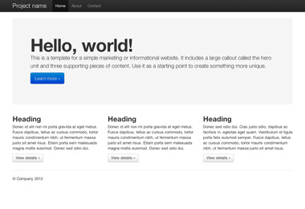
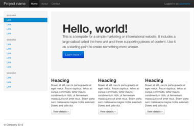

Exemplos do Boostrap
Nós incluímos uns poucos exemplos básicos como pontos de partida para trabalhar com o Bootstrap. Nós encorajamos as pessoas se iterarem com estes exemplos e não simplesmente usá-lo como resultado final
-

Site básico de marketing
Com a funcionalidade de uma unidade herói para mensagens primárias de três elementos suportados
-

Layout fluido
Usado para nosso novo responsive, o sistema de grid fluido cria um layout líquido com todo sentido
-

Modelo inicial
Um HTML no osso com todos os CSS's e javascript inclusos